%matplotlib inline
import numpy as np
import scipy as sp
import matplotlib as mpl
import matplotlib.cm as cm
import matplotlib.pyplot as plt
import pandas as pd
pd.set_option('display.width', 500)
pd.set_option('display.max_columns', 100)
pd.set_option('display.notebook_repr_html', True)
import seaborn as sns
sns.set_style("whitegrid")
sns.set_context("poster")From the Normal Model to Regression
Building a Bayesian regression from Kung San census data.
bayesian
regression
models
sampling
Walks through the progression from a normal model to Bayesian linear regression using Howell’s Kung San height and weight data. Implements grid approximation and PyMC3 MCMC, covering prior predictive checks, posterior inference, and polynomial regression.
The example we use here is described in McElreath’s book, and our discussion mostly follows the one there, in sections 4.3 and 4.4.
Howell’s data
These are census data for the Dobe area !Kung San (https://en.wikipedia.org/wiki/%C7%83Kung_people). Nancy Howell conducted detailed quantitative studies of this Kalahari foraging population in the 1960s.
df = pd.read_csv('assets/Howell1.csv', sep=';', header=0)
df.head()| height | weight | age | male | |
|---|---|---|---|---|
| 0 | 151.765 | 47.825606 | 63.0 | 1 |
| 1 | 139.700 | 36.485807 | 63.0 | 0 |
| 2 | 136.525 | 31.864838 | 65.0 | 0 |
| 3 | 156.845 | 53.041914 | 41.0 | 1 |
| 4 | 145.415 | 41.276872 | 51.0 | 0 |
df.tail()| height | weight | age | male | |
|---|---|---|---|---|
| 539 | 145.415 | 31.127751 | 17.0 | 1 |
| 540 | 162.560 | 52.163080 | 31.0 | 1 |
| 541 | 156.210 | 54.062497 | 21.0 | 0 |
| 542 | 71.120 | 8.051258 | 0.0 | 1 |
| 543 | 158.750 | 52.531624 | 68.0 | 1 |
plt.hist(df.height, bins=30);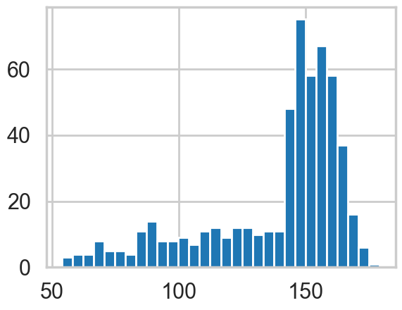
We get rid of the kids and only look at the heights of the adults.
df2 = df[df.age >= 18]
plt.hist(df2.height, bins=30);
Model for heights
We will now get relatively formal in specifying our models.
We will use a Normal model, \(h \sim N(\mu, \sigma)\), and assume that the priors are independent. That is \(p(\mu, \sigma) = p(\mu \vert \sigma) p(\sigma) = p(\mu)p(\sigma)\).
Our model is:
\[ h \sim N(\mu, \sigma)\\ \mu \sim Normal(148, 20)\\ \sigma = Std. dev. \]
from scipy.stats import norm
Y = df2.height.values
#Data Quantities
sig = np.std(Y) # assume that is the value of KNOWN sigma (in the likelihood)
mu_data = np.mean(Y)
n = len(Y)
print("sigma", sig, "mu", mu_data, "n", n)sigma 7.73132668454304 mu 154.5970926136364 n 352plt.hist(Y, bins=30, alpha=0.5);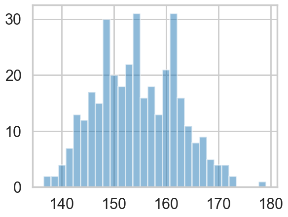
# Prior mean
mu_prior = 148
# prior std
tau = 20kappa = sig**2 / tau**2
sig_post =np.sqrt(1./( 1./tau**2 + n/sig**2));
# posterior mean
mu_post = kappa / (kappa + n) *mu_prior + n/(kappa+n)* mu_data
print("mu post", mu_post, "sig_post", sig_post)mu post 154.5942931576438 sig_post 0.4119936549295076#samples
N = 15000
theta_prior = np.random.normal(loc=mu_prior, scale=tau, size=N);
theta_post = np.random.normal(loc=mu_post, scale=sig_post, size=N);plt.hist(theta_post, bins=30, alpha=0.9, label="posterior");
plt.hist(theta_prior, bins=30, alpha=0.2, label="prior");
#plt.xlim([10, 30])
plt.legend();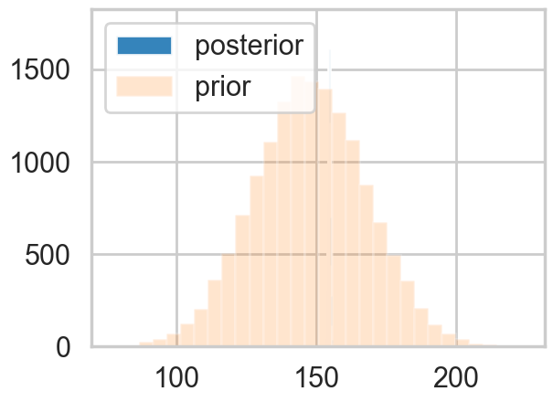
Y_postpred = np.random.normal(loc=mu_post, scale=np.sqrt(sig_post**2 + sig**2), size=N);Y_postpred_sample = np.random.normal(loc=theta_post, scale=sig);plt.hist(Y_postpred, bins=100, alpha=0.2);
plt.hist(Y_postpred_sample, bins=100, alpha=0.2);
plt.hist(np.random.choice(Y, replace=True, size=N), bins=100, alpha=0.5);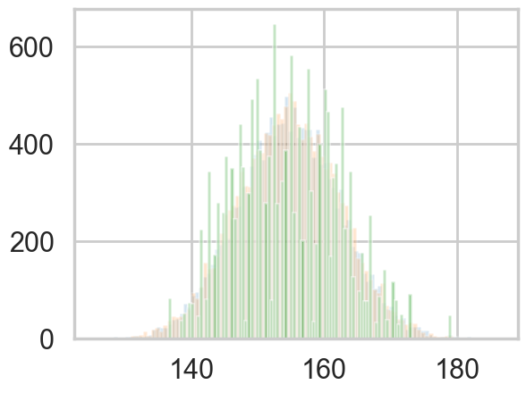
Regression: adding a predictor
plt.plot(df2.height, df2.weight, '.');
So lets write our model out now:
\[ h \sim N(\mu, \sigma)\\ \mu = intercept + slope \times weight\\ intercept \sim N(150, 100)\\ slope \sim N(0, 10)\\ \sigma = std. dev, \]
Why should you not use a uniform prior on a slope?
minweight = df2.weight.min()
maxweight = df2.weight.max()
minheight = df2.height.min()
maxheight = df2.height.max()from scipy.stats import norm
from scipy.stats import multivariate_normal
def cplot(f, ax=None, lims=None):
if not ax:
plt.figure()
ax=plt.gca()
if lims:
xx,yy=np.mgrid[lims[0]:lims[1]:lims[2], lims[3]:lims[4]:lims[5]]
else:
xx,yy=np.mgrid[0:300:1,-15:15:.1]
pos = np.empty(xx.shape + (2,))
pos[:, :, 0] = xx
pos[:, :, 1] = yy
ax.contourf(xx, yy, f(pos))
#data = [x, y]
return ax
def plotSampleLines(mu, sigma, numberOfLines, dataPoints=None, ax=None):
#Plot the specified number of lines of the form y = w0 + w1*x in [-1,1]x[-1,1] by
# drawing w0, w1 from a bivariate normal distribution with specified values
# for mu = mean and sigma = covariance Matrix. Also plot the data points as
# blue circles.
#print "datap",dataPoints
if not ax:
plt.figure()
ax=plt.gca()
for i in range(numberOfLines):
w = np.random.multivariate_normal(mu,sigma)
func = lambda x: w[0] + w[1]*x
xx=np.array([minweight, maxweight])
ax.plot(xx,func(xx),'r', alpha=0.05)
if dataPoints:
ax.scatter(dataPoints[0],dataPoints[1], alpha=0.4, s=10)
#ax.set_xlim([minweight,maxweight])
#ax.set_ylim([minheight,maxheight])
priorMean = np.array([150, 0])
priorPrecision=2.0
priorCovariance = np.array([[100*100, 0],[0, 10*10]])
priorPDF = lambda w: multivariate_normal.pdf(w,mean=priorMean,cov=priorCovariance)
priorPDF([1,2])np.float64(5.1409768989960456e-05)cplot(priorPDF);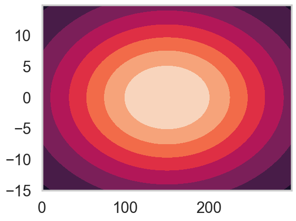
plotSampleLines(priorMean,priorCovariance,50)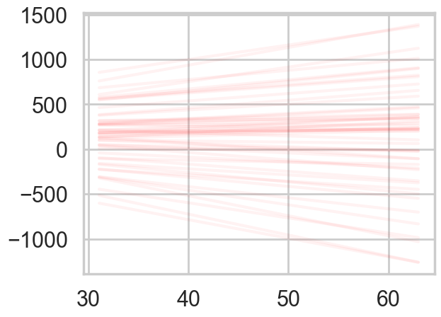
likelihoodPrecision = 1./(sig*sig)Posterior
We can now continue with the standard Bayesian formalism
\[ \begin{eqnarray} p(\bf w| \bf y,X) &\propto& p(\bf y | X, \bf w) \, p(\bf w) \nonumber \\ &\propto& \exp{ \left(- \frac{1}{2 \sigma_n^2}(\bf y-X^T \bf w)^T(\bf y - X^T \bf w) \right)} \exp{\left( -\frac{1}{2} \bf w^T \Sigma^{-1} \bf w \right)} \nonumber \\ \end{eqnarray} \]
In the next step we `complete the square’ and obtain
\[\begin{equation} p(\bf w| \bf y,X) \propto \exp \left( -\frac{1}{2} (\bf w - \bar{\bf w})^T (\frac{1}{\sigma_n^2} X X^T + \Sigma^{-1})(\bf w - \bar{\bf w} ) \right) \end{equation}\]
This is a Gaussian with inverse-covariance
\[A= \sigma_n^{-2}XX^T +\Sigma^{-1}\]
where the new mean is
\[\bar{\bf w} = A^{-1}\Sigma^{-1}{\bf w_0} + \sigma_n^{-2}( A^{-1} X^T \bf y )\]
To make predictions for a test case we average over all possible parameter predictive distribution values, weighted by their posterior probability. This is in contrast to non Bayesian schemes, where a single parameter is typically chosen by some criterion.
# Given the mean = priorMu and covarianceMatrix = priorSigma of a prior
# Gaussian distribution over regression parameters; observed data, x
# and y; and the likelihood precision, generate the posterior
# distribution, postW via Bayesian updating and return the updated values
# for mu and sigma. xtrain is a design matrix whose first column is the all
# ones vector.
def update(x,y,likelihoodPrecision,priorMu,priorCovariance):
postCovInv = np.linalg.inv(priorCovariance) + likelihoodPrecision*np.dot(x.T,x)
postCovariance = np.linalg.inv(postCovInv)
postMu = np.dot(np.dot(postCovariance,np.linalg.inv(priorCovariance)),priorMu) + likelihoodPrecision*np.dot(postCovariance,np.dot(x.T,y))
postW = lambda w: multivariate_normal.pdf(w,postMu,postCovariance)
return postW, postMu, postCovariancedesign = np.concatenate([np.ones(n).reshape(-1,1), df2.weight.values.reshape(-1,1)], axis=1)
response = df2.height.values# For each iteration plot the
# posterior over the first i data points and sample lines whose
# parameters are drawn from the corresponding posterior.
fig, axes=plt.subplots(figsize=(12,6), nrows=1, ncols=2);
mu = priorMean
cov = priorCovariance
postW,mu,cov = update(design,response,likelihoodPrecision,mu,cov)
cplot(postW, axes[0], lims=[107, 122, 0.1, 0.7, 1.1, 0.01])
plotSampleLines(mu, cov,50, (df2.weight.values,df2.height.values), axes[1])
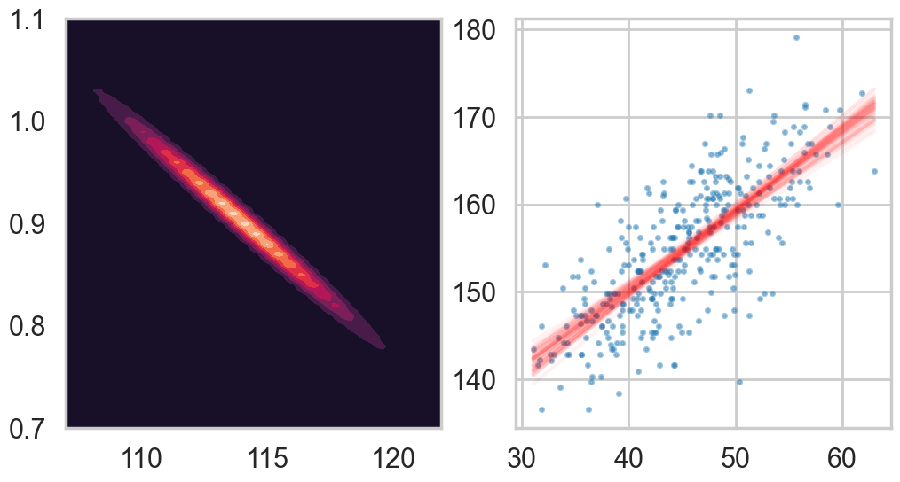
Lets get the posteriors “at each point”
weightgrid = np.arange(-20, 100)
test_design = np.concatenate([np.ones(len(weightgrid)).reshape(-1,1), weightgrid.reshape(-1,1)], axis=1)w = np.random.multivariate_normal(mu,cov, 1000) #1000 samples
w[:,0].shape(1000,)sns.histplot(w[:,0] + w[:,1] * 55, kde=True) # the weight=55 posterior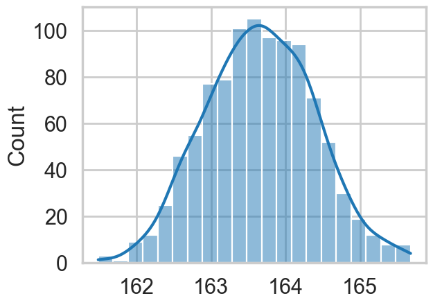
mu_pred = np.zeros((len(weightgrid), 1000))
for i, weight in enumerate(weightgrid):
mu_pred[i, :] = w[:,0] + w[:,1] * weight
post_means = np.mean(mu_pred, axis=1)
post_stds = np.std(mu_pred, axis=1)with sns.plotting_context('poster'):
plt.scatter(df2.weight, df2.height, c='b', alpha=0.9, s=10)
plt.plot(weightgrid, post_means, 'r')
#plt.fill_between(weightgrid, mu_hpd[:,0], mu_hpd[:,1], color='r', alpha=0.5)
plt.fill_between(weightgrid, post_means - 1.96*post_stds, post_means + 1.96*post_stds, color='red', alpha=0.4)
plt.xlabel('weight')
plt.ylabel('height')
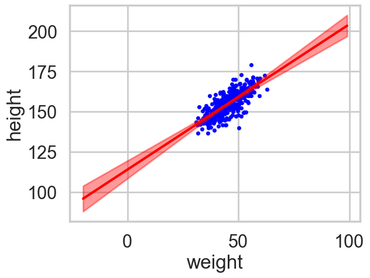
Oops, what happened here? Our correlations in parameters are huge! But the regression lines do make some sense. Lets look at the posterior predictive.
Posterior Predictive Distribution
Thus the predictive distribution at some \(x^{*}\) is given by averaging the output of all possible linear models w.r.t. the posterior
\[ \begin{eqnarray} p(y^{*} | x^{*}, {\bf x,y}) &=& \int p({\bf y}^{*}| {\bf x}^{*}, {\bf w} ) p(\bf w| X, y)dw \nonumber \\ &=& {\cal N} \left(y \vert \bar{\bf w}^{T}x^{*}, \sigma_n^2 + x^{*^T}A^{-1}x^{*} \right), \end{eqnarray} \]
which is again Gaussian, with a mean given by the posterior mean multiplied by the test input and the variance is a quadratic form of the test input with the posterior covariance matrix, showing that the predictive uncertainties grow with the magnitude of the test input, as one would expect for a linear model.
ppmeans = np.empty(len(weightgrid))
ppsigs = np.empty(len(weightgrid))
t2 = np.empty(len(weightgrid))
for i, tp in enumerate(test_design):
ppmeans[i] = mu @ tp
ppsigs[i] = np.sqrt(sig*sig + tp@cov@tp)
t2[i] = np.sqrt(tp@cov@tp)weightgrid[75]np.int64(55)plt.hist(w[:,0] + w[:,1] * 55, alpha=0.8)
plt.hist(norm.rvs(ppmeans[75], ppsigs[75], 1000), alpha=0.5)(array([ 3., 20., 68., 126., 241., 246., 173., 88., 29., 6.]),
array([137.76725447, 142.76230959, 147.75736471, 152.75241983,
157.74747495, 162.74253007, 167.73758519, 172.73264031,
177.72769544, 182.72275056, 187.71780568]),
<BarContainer object of 10 artists>)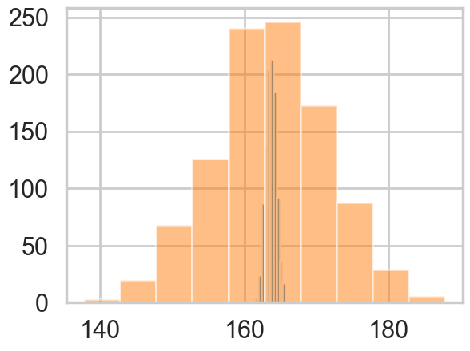
with sns.plotting_context('poster'):
plt.scatter(df2.weight, df2.height, c='b', alpha=0.9, s=10)
plt.plot(weightgrid, ppmeans, 'r')
#plt.fill_between(weightgrid, mu_hpd[:,0], mu_hpd[:,1], color='r', alpha=0.5)
plt.fill_between(weightgrid, ppmeans - 1.96*ppsigs, ppmeans + 1.96*ppsigs, color='green', alpha=0.4)
plt.xlabel('weight')
plt.ylabel('height')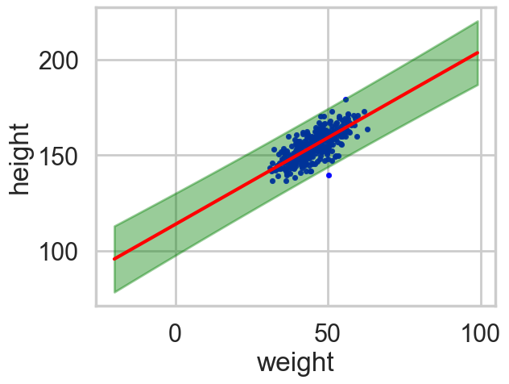
However, by including the \(\mu\) as a deterministic in our traces we only get to see the traces at existing data points. If we want the traces on a grid of weights, we’ll have to explivitly plug in the intercept and slope traces in the regression formula